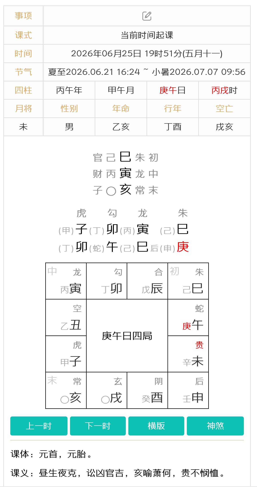

| 天将 | 五行 | 核心类象 | 空亡断诀 |
|---|---|---|---|
| 天乙贵人 | 土 | 官贵、文书、解厄 | 求助无门 |
| 螣蛇 | 火 | 惊恐、梦魇、缠绕 | 诸凶可免 |
| 朱雀 | 火 | 口舌、文书、诉讼 | 口舌消散 |
| 六合 | 木 | 婚姻、交易、和合 | 婚约不成 |
| 勾陈 | 土 | 田土、牢狱、迟滞 | 纠纷可解 |
| 青龙 | 木 | 财帛、喜庆、升迁 | 财喜减半 |
| 天空 | 土 | 虚诈、落空、僧道 | 空上加空 |
| 白虎 | 金 | 血光、疾病、丧事 | 见凶不凶 |
| 太常 | 土 | 酒食、服饰、官职 | 喜事减半 |
| 玄武 | 水 | 盗贼、欺诈、暧昧 | 谋害不凶 |
| 太阴 | 金 | 阴私、隐匿、妇女 | 隐事败露 |
| 天后 | 水 | 妇女、婚姻、生育 | 婚事不顺 |
| 地支 | 支神 | 方位 | 核心类象 |
|---|---|---|---|
| 子 | 神后 | 正北 | 水源、阴私、北方 |
| 丑 | 大吉 | 东北 | 田宅、牛畜、富贵 |
| 寅 | 功曹 | 东北 | 文书、道路、山林 |
| 卯 | 太冲 | 正东 | 门户、车船、草木 |
| 辰 | 天罡 | 东南 | 官府、牢狱、土库 |
| 巳 | 太乙 | 东南 | 文书、炉冶、蛇虫 |
| 午 | 胜光 | 正南 | 文章、光明、马匹 |
| 未 | 小吉 | 西南 | 饮食、草木、妇女 |
| 申 | 传送 | 西南 | 道路、书信、金属 |
| 酉 | 从魁 | 正西 | 酒食、金银、城郭 |
| 戌 | 河魁 | 西北 | 坟墓、终结、田土 |
| 亥 | 登明 | 西北 | 江河、雨水、文书 |
| 月份 | 中气 | 月将 | 将名 | 月建 |
|---|---|---|---|---|
| 正月 | 雨水 | 亥 | 登明 | 寅 |
| 二月 | 春分 | 戌 | 河魁 | 卯 |
| 三月 | 谷雨 | 酉 | 从魁 | 辰 |
| 四月 | 小满 | 申 | 传送 | 巳 |
| 五月 | 夏至 | 未 | 小吉 | 午 |
| 六月 | 大暑 | 午 | 胜光 | 未 |
| 七月 | 处暑 | 巳 | 太乙 | 申 |
| 八月 | 秋分 | 辰 | 天罡 | 酉 |
| 九月 | 霜降 | 卯 | 太冲 | 戌 |
| 十月 | 小雪 | 寅 | 功曹 | 亥 |
| 十一月 | 冬至 | 丑 | 大吉 | 子 |
| 十二月 | 大寒 | 子 | 神后 | 丑 |
| 日干 | 昼贵（阳贵） | 夜贵（阴贵） |
|---|---|---|
| 甲 戊 庚 | 丑（大吉） | 未（小吉） |
| 乙 己 | 子（神后） | 申（传送） |
| 丙 丁 | 亥（登明） | 酉（从魁） |
| 辛 | 午（胜光） | 寅（功曹） |
| 壬 癸 | 巳（太乙） | 卯（太冲） |
| 旬首 | 旬空二支 | 记忆 |
|---|---|---|
| 甲子旬 | 戌 亥 | 子→戌亥空 |
| 甲戌旬 | 申 酉 | 戌→申酉空 |
| 甲申旬 | 午 未 | 申→午未空 |
| 甲午旬 | 辰 巳 | 午→辰巳空 |
| 甲辰旬 | 寅 卯 | 辰→寅卯空 |
| 甲寅旬 | 子 丑 | 寅→子丑空 |
| 天干 | 寄宫 | 五行 | 天干 | 寄宫 | 五行 |
|---|---|---|---|---|---|
| 甲 | 寅 | 木 | 己 | 未 | 土 |
| 乙 | 辰 | 木 | 庚 | 申 | 金 |
| 丙 | 巳 | 火 | 辛 | 戌 | 金 |
| 丁 | 未 | 火 | 壬 | 亥 | 水 |
| 戊 | 巳 | 土 | 癸 | 丑 | 水 |
| 第四课 | 第三课 | 第二课 | 第一课 |
| 第四课 | 第三课 | 第二课 | 第一课 |
| 第四课 | 第三课 | 第二课 | 第一课 |
| 相合 | 化气 |
|---|---|
| 子 丑 | 化土 |
| 寅 亥 | 化木 |
| 卯 戌 | 化火 |
| 辰 酉 | 化金 |
| 巳 申 | 化水 |
| 午 未 | 日月合 |
| 三支 | 合成 | 结构 |
|---|---|---|
| 申 子 辰 | 水局 | 生·旺·墓 |
| 亥 卯 未 | 木局 | 生·旺·墓 |
| 寅 午 戌 | 火局 | 生·旺·墓 |
| 巳 酉 丑 | 金局 | 生·旺·墓 |
| 相冲 | |
|---|---|
| 子 午 | 丑 未 |
| 寅 申 | 卯 酉 |
| 辰 戌 | 巳 亥 |
| 类型 | 相刑 |
|---|---|
| 无恩之刑 | 寅刑巳 · 巳刑申 · 申刑寅 |
| 恃势之刑 | 丑刑戌 · 戌刑未 · 未刑丑 |
| 无礼之刑 | 子刑卯 · 卯刑子 |
| 相破 | |
|---|---|
| 子 酉 | 丑 辰 |
| 寅 亥 | 卯 午 |
| 巳 申 | 未 戌 |
| 相害 | |
|---|---|
| 子 未 | 丑 午 |
| 寅 巳 | 卯 辰 |
| 申 亥 | 酉 戌 |
| 季 | 旺 | 相 | 休 | 囚 | 死 |
|---|---|---|---|---|---|
| 春 | 木 | 火 | 水 | 金 | 土 |
| 夏 | 火 | 土 | 木 | 水 | 金 |
| 秋 | 金 | 水 | 土 | 火 | 木 |
| 冬 | 水 | 木 | 金 | 土 | 火 |

▲ 庚午日戌时实例排盘（2026.06.25 19:51）
大六壬是中国古代最高层次的预测学之一，其排盘过程逻辑严密，本质是一套基于时间和空间坐标的数据建模与状态机演化系统。
以下通过案例（公历 2026年06月25日 19时51分）为您完整拆解起盘的七大步骤及核心算法逻辑。
起盘系统首先抓取的是当前的时间坐标，进行干支转换。
确定空间上太阳的位置，按二十四节气中的"中气"来划分。
利用"占时"和"月将"构建天盘与地盘的对应关系（天动地静）。
天地盘水平对照表：
| 地盘方位（固定） | 戌 | 亥 | 子 | 丑 | 寅 | 卯 | 辰 | 巳 | 午 | 未 | 申 | 酉 |
|---|---|---|---|---|---|---|---|---|---|---|---|---|
| 天盘落子（旋转） | 未 | 申 | 酉 | 戌 | 亥 | 子 | 丑 | 寅 | 卯 | 辰 | 巳 | 午 |
利用天地盘矩阵与日干支（庚午）生成四课。天干需要通过"十干寄宫"规则转换为地支（庚寄申）。
四课水平对照表（从右至左阅读）：
| 第四课（辰阴） | 第三课（辰课） | 第二课（日阴） | 第一课（日课） |
|---|---|---|---|
| 子 | 卯 | 寅 | 巳 |
| 卯 | 午 | 巳 | 庚 |
通过九大算法分支（九宗门）寻找四课中的矛盾点（克），以此推导事物的起因、经过、结果（初、中、末传）。
天将赋予四课和三传具体的吉凶象意，固定顺序为：贵人、螣蛇、朱雀、六合、勾陈、青龙、天空、白虎、太常、玄武、太阴、天后。
| 天将 | 贵人 | 天后 | 太阴 | 玄武 | 太常 | 白虎 | 天空 | 青龙 | 勾陈 | 六合 | 朱雀 | 螣蛇 |
|---|---|---|---|---|---|---|---|---|---|---|---|---|
| 天盘地支 | 未 | 申 | 酉 | 戌 | 亥 | 子 | 丑 | 寅 | 卯 | 辰 | 巳 | 午 |
剥开玄学外衣，大六壬是一套严密的数据建模与状态机系统。
四课的本质是从庞杂的天地盘数据库中，实例化出参与事件的核心对象，并读取它们的静态初始数据（State）。
三传是动态的执行流水线（Execution Pipeline），代表事物从起因到结果的演化。
| 刑类 | 刑链 | 说明 |
|---|---|---|
| 无恩之刑 | 寅→巳→申→寅 | 循环三刑 |
| 持势之刑 | 丑→戌→未→丑 | 循环三刑 |
| 无礼之刑 | 子→卯→子 | 互刑 |
| 自刑→杜传格 | 辰 午 酉 亥 各自刑 | 三传同一神 |
| 日支三合 | 驿马位 |
|---|---|
| 寅 午 戌 日 | 申 |
| 申 子 辰 日 | 寅 |
| 巳 酉 丑 日 | 亥 |
| 亥 卯 未 日 | 巳 |
| 过了这个节气 | 月将 | 过了这个节气 | 月将 |
|---|---|---|---|
| 雨水 | 亥 | 处暑 | 巳 |
| 春分 | 戌 | 秋分 | 辰 |
| 谷雨 | 酉 | 霜降 | 卯 |
| 小满 | 申 | 小雪 | 寅 |
| 夏至 | 未 | 冬至 | 丑 |
| 大暑 | 午 | 大寒 | 子 |
| 天干 | 甲 | 乙 | 丙 | 丁 | 戊 | 己 | 庚 | 辛 | 壬 | 癸 |
|---|---|---|---|---|---|---|---|---|---|---|
| 借住在 | 寅 | 辰 | 巳 | 未 | 巳 | 未 | 申 | 戌 | 亥 | 丑 |
| 天将 | 它代表的意思 |
|---|---|
| 贵人 | 贵人、长辈、当官的、帮你的人、逢凶化吉 |
| 腾蛇 | 虚惊、怪事、心慌、缠绕、文书 |
| 朱雀 | 口舌是非、消息、文书、官司、火 |
| 六合 | 婚姻、和好、合作、中间人、私情 |
| 勾陈 | 田地、牵扯不清、争斗、拖延 |
| 青龙 | 钱财、喜事、酒食、官运 |
| 天空 | 虚的、不实在、空想、欺骗、说话不算数 |
| 白虎 | 道路、生病、丧事、血光、急、凶 |
| 太常 | 吃穿、宴席、文章、平平常常 |
| 玄武 | 盗贼、丢东西、暗中的事、隐私、欺诈 |
| 太阴 | 暗中、隐蔽、女人、私底下 |
| 天后 | 妇女、暧昧、感情、恩惠、家里的事 |
| 记号 | 意思 |
|---|---|
| 空亡（旬空） | "作废/落空"——力气大减，事情容易成空、嘴上答应实际没下文 |
| 驿马 | "要动了"——主跑动、出门、变动 |
| 墓 | "被罩住/卡死"——人或事被困住、发懵、动不了 |
| 当天属于 | 这两个字作废 |
|---|---|
| 甲子旬 | 戌 亥 |
| 甲戌旬 | 申 酉 |
| 甲申旬 | 午 未 |
| 甲午旬 | 辰 巳 |
| 甲辰旬 | 寅 卯 |
| 甲寅旬 | 子 丑 |
| 问的是 | 盯着看这个 |
|---|---|
| 我自己 | 日干、头顶的字、本命 |
| 对方/别人 | 日支、头顶的字 |
| 财运 | "我"能管住的那个字、青龙 |
| 工作/官运 | "管着我"的那个字、贵人、朱雀 |
| 婚姻感情 | 六合、天后 |
| 生病 | 白虎、本命头顶的字 |
| 丢东西/抓贼 | 玄武 |
| 考试/文书 | 朱雀、贵人 |
| 出门 | 驿马、白虎 |
| 关系 | 大白话 | 偏向 |
|---|---|---|
| 生 | 一个帮另一个 | 顺、得力、有人扶 |
| 克 | 一个压另一个 | 阻、冲突、被压制 |
| 合 | 两个粘在一起 | 成、和好，也可能被缠住脱不开 |
| 冲 | 正面对撞 | 动、变、散、对着干 |
| 刑害 | 暗中互相伤 | 内耗、暗损、不和 |
| 墓 | 被收进柜子 | 困、藏、停、发懵 |
以程序算法视角完整拆解大六壬推演引擎：五个基础阶段构建从起盘到断局的完整流水线，五个高阶模块深入异常处理、类神并发、个性化密钥、神煞扩展与三式联动。
在大六壬的底层数据结构与基础运行流水线搭建完毕后，进阶学习可以像推进项目开发一样，按以下顺序逐步完善算法的边缘测试、变量权重与最终输出模块：
当"贼克法"（四课中仅有一克）失效时，系统按严格优先级依次调用后续分支。以下是完整的六大异常处理机制：
触发条件：四课中出现两重、三重或四重克，无法直接判定初传。
底层逻辑：与日干阴阳属性相同的克，对我产生的影响最直接。
| 日干阴阳 | 取哪个克为初传 | 典型例子 |
|---|---|---|
| 阳日（甲丙戊庚壬） | 阳地支（子寅辰午申戌） | 甲日多克，取属阳者 |
| 阴日（乙丁己辛癸） | 阴地支（丑卯巳未酉亥） | 丁日多克，取属阴者 |
中传与末传：初传确定后，中末传恢复默认（查天地盘落位顺延）。
触发条件：比用法过滤后仍有两个以上阴阳属性相同的地支。
底层逻辑："涉害"意为跋山涉水经历克害——经历磨难越多，动能越大。各候选地支从其地盘老家（本位）出发，顺时针走到天盘当前位置，统计沿途被克次数，受克最深者取为初传。
| 地支位置 | 涉害深度 | 备注 |
|---|---|---|
| 孟位（寅申巳亥） | 最深（三至四重克） | 动能最大，优先取 |
| 仲位（子午卯酉） | 中等（两重克） | 次选 |
| 季位（辰戌丑未） | 最浅（一重克） | 末选 |
二次防死锁机制（见机与察微）：若两候选克数完全相同：
触发条件：四课上下完全无克（相生或比和），贼克、比用、涉害全部失效。
底层逻辑：内部无矛盾，向外部找干涉——跳出四课的上下对应，跨层级查询。
触发条件：四课无克，且无任何遥克，系统陷入绝对零度的死寂。
底层逻辑：借用宇宙固定物理属性——"酉"是日落之地、阴阳交界之门（昴星在此），强行提取状态。
| 日干阴阳 | 操作 | 取值 |
|---|---|---|
| 阳日（仰视向外求） | 去地盘找"酉"位 | 地盘酉上顶着的天盘地支为初传 |
| 阴日（俯视向内求） | 去天盘找"酉"位 | 天盘酉落在的地盘地支为初传 |
触发条件：第一课与第三课重合，四课缩减为三课甚至两课。
别责法（三课且无克）：
八专法（两课且无克）：干支同位（如甲寅日），信息极度坍塌。
这是整个系统中最极端的两种全局状态，一旦识别，直接跳过前面所有算法，进入专有处理通道。
| 类型 | 触发条件 | 物理意义 | 发传逻辑 |
|---|---|---|---|
| 伏吟（系统死锁） | 月将 = 占时，天盘与地盘完全重合 | 天地不动，时空凝固，事情卡住 | 取日干寄宫或日支为切入，按"刑法"（子卯刑、寅巳申三刑）强行推动三传 |
| 返吟（系统对冲） | 月将与占时相冲（如月将子，占时午），盘面180°大反转 | 天地颠倒，来回折腾，事情反复无常 | 有克仍用贼克法；中末传取初传对冲位（如初传寅→中传申→末传寅，来回横跳） |
骨架（三传）搭好后，需要知道盘面里哪个参数说话分量最重——不是所有的"火"都一样热，不是所有的"水"都一样冷。
月建（占测时的月份地支）决定整个盘面的五行基调，赋予各地支五个能量等级：
| 状态 | 含义 | 能量倍率 | 春季（寅卯月）举例 |
|---|---|---|---|
| 旺 | 与月建同五行 | 100% | 木（寅卯）——无坚不摧 |
| 相 | 月建所生的五行 | 80% | 火——正在发育 |
| 休 | 生月建的五行 | 40% | 水——进入休眠 |
| 囚 | 克月建的五行 | 20% | 金——能量被困 |
| 死 | 月建所克的五行 | 0% | 土——彻底失效 |
日辰是事情发生当下的局部环境。即使地支在月建中被判定为"死囚"，只要日辰去生扶，依然能获得"动态可用"的能量。
每个地支自身带有一套动态"生命周期状态"，精细描绘事物从孕育到消亡的12个阶段：
| 阶段 | 大白话 | 能量 | 断局含义 |
|---|---|---|---|
| 长生 | 婴儿降生 | ↑↑ | 新起步、生机勃勃、有贵人支持 |
| 沐浴 | 桃花/败地 | ↑（不稳） | 脆弱、易受诱惑、暗藏色情纠纷 |
| 冠带 | 少年成长 | ↑↑ | 事物逐渐成型，开始有所作为 |
| 临官 | 步入职场 | ↑↑↑ | 能量成熟，大力出奇迹 |
| 帝旺 | 顶峰状态 | 最强 | 利进攻求官求财；但物极必反 |
| 衰 | 开始走下坡 | ↓ | 力量减退，宜守不宜攻 |
| 病 | 进入病态 | ↓↓ | 事物开始出现问题 |
| 死 | 能量归零 | ↓↓↓ | 力量消尽，难以行动 |
| 墓 | 被收进柜子 | （被冻结） | ⚠ 事物被隐藏/困住/进入死胡同，除非被冲开 |
| 绝 | 彻底断绝 | 最弱 | 断根、消失，重新孕育前的空窗 |
| 胎 | 开始孕育 | （新生） | 新事物正在酝酿中，尚未显现 |
| 养 | 养育阶段 | （待发） | 事物在保护中成长，即将出生 |
| 五行 | 长生 | 沐浴 | 冠带 | 临官 | 帝旺 | 衰 | 病 | 死 | 墓 | 绝 | 胎 | 养 |
|---|---|---|---|---|---|---|---|---|---|---|---|---|
| 木 | 亥 | 子 | 丑 | 寅 | 卯 | 辰 | 巳 | 午 | 未 | 申 | 酉 | 戌 |
| 火 | 寅 | 卯 | 辰 | 巳 | 午 | 未 | 申 | 酉 | 戌 | 亥 | 子 | 丑 |
| 土（同火） | 寅 | 卯 | 辰 | 巳 | 午 | 未 | 申 | 酉 | 戌 | 亥 | 子 | 丑 |
| 金 | 巳 | 午 | 未 | 申 | 酉 | 戌 | 亥 | 子 | 丑 | 寅 | 卯 | 辰 |
| 水（同土） | 申 | 酉 | 戌 | 亥 | 子 | 丑 | 寅 | 卯 | 辰 | 巳 | 午 | 未 |
空亡（Null Pointer）：空亡地支相当于直接赋空——
| 关系 | 大白话 | 典型表现 |
|---|---|---|
| 冲（如子午冲） | 最猛烈的碰撞 | 突发事件、散伙决裂；吉事逢冲则散，凶事逢冲同样消散 |
| 刑（如无恩之刑） | 内部摩擦互相折磨 | 官司诉讼、刑罚伤灾，极其痛苦难以抽身 |
| 破（如子酉破） | 结构损坏 | 事情中途掉链子、器物损坏、关系出现裂痕 |
| 害（如子未害） | 暗中伤害 | 背后放冷箭、被自己人背叛、慢性损耗 |
算法跑通后，把抽象的干支符号翻译成具体人类社会事件：地支 = 物理实体（名词），天将 = 属性标签（形容词），两者拼接输出具体画面。
| 地支 | 核心意象 | 典型人物/社会角色 | 物品/场所 | 身体部位 |
|---|---|---|---|---|
| 子 | 流动、暗昧、圆润、寒冷 | 妇女、盗贼、航海者、儿童 | 水池、江河、暗道、珍珠 | 肾、泌尿系统、耳、血液 |
| 丑 | 迟滞、阴暗、包容、冤仇 | 尊长、老人、农夫、怨妇 | 桥梁、坟墓、田园、保险柜、下水道 | 脾胃、腹部、子宫 |
| 寅 | 生机、发端、栋梁、正直 | 官员、丈夫、公职人员、首领 | 树林、公门、庙宇、高楼、木材 | 胆、毛发、关节、脉络 |
| 卯 | 震动、交替、分离、破裂 | 兄弟、手工业者、司机、手艺人 | 门窗、车辆、船只、大街、床 | 肝、筋脉、十指、神经 |
| 辰 | 变化、争讼、凶狠、掩盖 | 军警、恶人、屠夫、地痞 | 麦地、坟墓、法庭、网罟、井泉 | 皮肤、肩、胸部、项背 |
| 巳 | 变化、文章、惊恐、明朗 | 妇人、学者、炉冶之人、乞丐 | 炉冶、窑灶、砖瓦、文书、画框 | 心、面部、咽喉、齿 |
| 午 | 光明、文书、高耸、急躁 | 官员、使者、文化人、名流 | 厅堂、马房、道路、信件、电子产品 | 小肠、眼睛、头、心血 |
| 未 | 宴饮、迟疑、醇厚、木讷 | 父母、老妇、厨师、酒场中人 | 庭院、酒肆、茶馆、井泉、医药 | 脾、脊梁、肌肉、唇 |
| 申 | 传递、肃杀、威武、阻隔 | 行人、军警、医生、猎人 | 道路、金属物、祠堂、医院、刀剑 | 大肠、经络、骨、肺 |
| 酉 | 肃杀、刑伤、精巧、密谋 | 少女、妓女、金银匠、暗娼 | 金银首饰、银行、钟表、乐器 | 肺、呼吸道、口齿、精血 |
| 戌 | 欺诈、孤寒、聚合、暴力 | 狱卒、长者、和尚、孤儿 | 牢狱、坟墓、锁钥、厨房、寺观 | 命门、腿足、胃、踝 |
| 亥 | 赏赐、幼小、流转、通达 | 孩童、乞丐、醉客、江湖人 | 厕所、沟渠、楼阁、江河、笔墨 | 肾、头部、血液 |
| 天将 | 五行 | 核心类象 | 发用断语 | 空亡效果 |
|---|---|---|---|---|
| 贵人 | 土 | 权贵、福禄、吉祥保护 | 贵人相助，升迁有望 | 贵人缺位，救祸无效 |
| 螣蛇 | 火 | 惊恐、怪异、缠绕、梦魇 | 吉中带扰，凶时灾祸缠身 | 诸凶可免（螣蛇最喜入空） |
| 朱雀 | 火 | 文书、口舌、信息、诉讼 | 主口舌是非或文书往来 | 口舌消散，文书不成 |
| 六合 | 木 | 婚姻、交易、合作、和合 | 占婚最喜，交易顺利 | 婚约不成，合同作废 |
| 勾陈 | 土 | 田土、牢狱、争斗、迟滞 | 主田产纠纷、官司拖延 | 纠纷可解，事不成 |
| 青龙 | 木 | 财帛、喜庆、升迁、酒食 | 大吉，主财利升官嫁娶 | 财喜减半 |
| 天空 | 土 | 虚诈、落空、僧道、遗失 | 事体落空，虚诈不实 | —（天空本身就是空） |
| 白虎 | 金 | 血光、疾病、死亡、丧事 | 大凶，主伤灾疾病丧亡 | 见凶不凶，大凶减等 |
| 太常 | 土 | 饮食、宴饮、服饰、官职 | 主婚宴喜庆、官场礼遇 | 喜事减半 |
| 玄武 | 水 | 盗贼、欺诈、遗失、暗昧 | 主失窃被骗，预谋不轨 | 谋害不凶，盗贼不成 |
| 太阴 | 金 | 阴私、隐匿、妇女、阴谋 | 主暗中谋划、阴私之事 | — |
| 天后 | 水 | 妇女、婚姻、生育、雨水 | 主妇女之事婚姻生育 | — |
| 组合 | 天将 | 地支 | 象意输出 |
|---|---|---|---|
| 朱雀 + 卯 | 文书、罚单、信息 | 车辆、门窗、道路 | 出行吃交通罚单，或车子手续证件出问题 |
| 白虎 + 申（真虎发威） | 血光、威权、刀剑 | 道路、金属、公安（金同申） | 疾病大凶（需手术），官司对方背景极强、暴力执法 |
| 玄武 + 子 | 盗贼、遗失、暗昧 | 水池、江河、暗道 | 失物被贼偷走藏入极阴暗处，很难追回 |
| 六合 + 酉 | 婚姻、合作 | 少女、首饰、暗娼（酉金克六合木） | 不正当私情，或因金钱暗中交易，看似和合实则各有图谋 |
古人经过大量实践总结出许多高频出现的特定盘面结构。掌握课格，断局时可直接调用"缓存"结论，一针见血。课格有上百种，以下精选最具实战价值的核心课格。
| 课格 | 触发条件 | 核心象意 |
|---|---|---|
| 铸印课 | 戌加巳为初传（巳火炼戌土印信），或三传见戌巳卯 | 重塑权威、获得背书。极度利于考取功名、获得营业执照、掌握公司核心权力 |
| 斩关课 | 三传贯穿四孟（寅申巳亥）冲破各方阻隔 | 利于出行、突围、逃跑、打破僵局，势如破竹一往无前 |
| 催官课 | 贵人、青龙、太常加临日干，且五行旺相 | 官方提拔、绿灯放行。领导直接下委任状，升职加薪速度极快，一路畅通无阻 |
| 斫轮课 | 天盘"卯"落在地盘"申"上（申金砍伐卯木） | 精雕细琢、人才历练。过程虽痛苦，最终能被塑造成有用之才，利升职 |
| 课格 | 触发条件 | 核心象意 |
|---|---|---|
| 龙战课 | 卯酉日，天盘卯落地盘酉上（或酉落卯上） | 同归于尽、激烈火拼。两股势均力敌正面硬刚，两败俱伤，绝无妥协 |
| 退茹课 | 三传呈逐步退缩之势（末传弱于初传） | 步步后退、事情受阻。当前项目必须叫停或重构 |
| 玄胎课 | 玄武乘亥子发用，或三传相生循环 | 暗中孕育麻烦、反复纠缠。表面风平浪静，内部已有祸患酝酿 |
前四阶段完成了后台运算，第五阶段将所有参数组装成用户能看懂的"最终诊断报告"。
拿到排好的盘面，程序第一眼抓取三个核心变量，构成事情的主轴：
| 切入点 | 对应位置 | 代表含义 |
|---|---|---|
| 初传（发用） | 三传第一位 | 事情的起因、最先动起来的核心动力 |
| 末传（归宿） | 三传第三位 | 事情的最终结果与归宿 |
| 日干（本体） | 日干自身 | 求测者当前的状态与能量 |
初传是事情的起因和动能，但这个动能对"我（日干）"到底是好是坏，必须通过五行生克结算：
| 交互关系 | 业务输出结论 |
|---|---|
| 初传 生 日干 | 有人助我、贵人相助，事情对我有利 |
| 初传 克 日干 | 遭受打压、被外力克制，形势不利 |
| 日干 生 初传 | 我主动输出能量，劳碌耗心，可能得不偿失 |
| 日干 克 初传 | 我能掌控局势，能管住对方/事情 |
| 初传与日干 比和 | 同业竞争、同类相遇，平分秋色，或竞争激烈 |
预测最终发生时间——有一套"锁与钥匙"的匹配机制。事情没发生，是因为关键数据被"锁"住了；当时间流转到特定地支，把锁打开时，就是事件弹出的应期。
| 锁定状态 | 解锁条件（应期） |
|---|---|
| 三传/用神落空亡 | 出空之日（旬内被冲开，或换旬后自动出空） |
| 三传/用神入墓 | 冲墓之日（如用神入未墓，逢丑日冲开） |
| 三传/用神被合绊（贪合忘克） | 合神被冲开之日，或合局散去之时 |
| 初传旺相 | 近期（旬内）迅速发生 |
| 初传休囚 | 延迟（月后或更久）方能发生 |
推算流程：① 检查三传和用神的异常状态标签（空亡/入墓/被合）→ ② 调用表格寻找对应"解锁钥匙地支" → ③ 将该地支映射到干支历，输出具体年月日。
当盘面抛出"大凶"课格时，系统并不直接宣判失败，而是触发后台扫描程序，寻找能修复这个Bug的"补丁"。
五行的底层天性是"贪生忘克"——只要有可以投资（生）的目标，就立刻放弃原有的攻击（克）计划。
当盘面出现"冲"（决裂碰撞）或"刑"（内部折磨），系统会调用"合"机制强行中断冲突。
德神是系统直接下发的最高级VIP免疫特权——盘面带德神，相当于运行在最高级别"安全沙箱"中，任何凶煞都无法造成毁灭性打击。
| 德神 | 推算规则 | 权限级别 |
|---|---|---|
| 天德 | 按月份推算，各月固定（正月丁、二月申、三月壬…） | 最高级，覆盖大部分凶煞 |
| 月德 | 寅午戌月在丙，申子辰月在壬，亥卯未月在甲，巳酉丑月在庚 | 次高级，与天德叠加效果更强 |
三传（Main Thread）反映动能最大的核心事件。但如果求测者同时抛出多个并发请求（"跳槽能成功吗？同时婚姻有没有问题？"），就需要调用"类神（Class Object）"机制，脱离三传主轴，向全局天地盘矩阵发起并发查询。
| 查询业务 | 主要类神（天将） | 辅助类神（地支） |
|---|---|---|
| 文书、合同、信息 | 朱雀 | 巳、午（文字） |
| 财富、钱财 | 青龙、天后 | 妻财爻对应地支 |
| 官职、工作 | 贵人、太常 | 官鬼爻对应地支 |
| 婚姻、感情 | 六合、天后 | 妻财/天后对应地支 |
| 疾病、健康 | 白虎、螣蛇 | 病对应地支（长生12阶） |
| 盗窃、遗失 | 玄武 | 子（水暗藏） |
| 官司、诉讼 | 勾陈、朱雀 | 辰（天牢） |
| 出行、旅途 | 驿马、贵人 | 寅申（道路） |
同一时间同一地点两人起盘，四课三传完全一样——但结局必然不同。大六壬通过"本命"与"行年"两个个性化API Key将宇宙的公共矩阵与个体属性剥离开来。
| 参数 | 数据来源 | 物理意义 | 类比 |
|---|---|---|---|
| 本命 | 求测者出生那年的农历地支 | 物理肉身、先天根基、底线与最终承受力（终身不变） | 硬件MAC地址/静态属性 |
| 行年 | 当年虚岁对应的动态地支 | 当前这一年的运势环境、正在经历的核心事件（每年更新） | 动态Session ID/运行时环境 |
| 性别 | 起算点 | 方向 | 算法 |
|---|---|---|---|
| 男命（阳顺） | 寅（1岁起） | 顺时针 | (寅位 + 虚岁 - 1) % 12 → 对应地支 |
| 女命（阴逆） | 申（1岁起） | 逆时针 | (申位 - 虚岁 + 1 + N×12) % 12 → 对应地支 |
将本命与行年这两个地支投射到天地盘中，看其"上神"（头顶盖着的天盘地支）——
| 数据结构表现 | 业务输出结论 |
|---|---|
| 三传凶煞未冲克本命/行年，且上神为吉神 | 灾难避险——大环境恶劣但个体防御强，灾祸绕开该人 |
| 三传大吉但本命/行年上神落空亡 | 红利无效——大好局面与我无关，完美错过这波红利 |
| 天地盘隐藏凶将恰好落在本命/行年之上 | 引火烧身——表面风平浪静，暗中小人专门针对该人 |
| 三传能量全部流向并生扶本命/行年，或末传就是本命/行年 | 反客为主——最终利益/控制权全部落入该人口袋 |
除核心业务逻辑（四课三传）外，系统还根据年月日变量动态生成上百个"神煞"插件，不改变主干吉凶，但极大微调事件颗粒度，提供极具象的细节特写。
| 神煞 | 算法规则 | 功能含义 |
|---|---|---|
| 禄神 | 日干五行的临官之地 | 核心资金池、底薪、正官职位 |
| 羊刃 | 日干五行的帝旺之地 | 刚猛动能、手术刀、竞争对手 |
| 天乙贵人 | 按日干查贵人表（甲戊庚→丑未，乙己→子申…） | 贵人、上级、能救场的关键人物 |
| 神煞 | 算法规则 | 功能含义 |
|---|---|---|
| 驿马 | 申子辰马在寅，寅午戌马在申，亥卯未马在巳，巳酉丑马在亥 | 加速器、位移、出行、快递、跳槽变动 |
| 桃花 | 申子辰花在酉，寅午戌花在卯，亥卯未花在子，巳酉丑花在午 | 异性缘、人际吸引力、暗藏色情纠纷 |
太乙神数、奇门遁甲、大六壬并称"三式"，是古代最高级别的三大预测模型，底层架构的设计初衷完全不同。
| 系统 | 算力侧重 | 时间颗粒度 | 核心数据模型 | 最擅长的业务 |
|---|---|---|---|---|
| 太乙神数 | 国运/宏观大势 | 年为周期 | 九宫阴阳大数 | 国家政策、行业趋势、历史兴衰预判 |
| 奇门遁甲 | 兵机/空间战术 | 时辰为周期 | 九宫八门八神 | 空间战术布局、选方位、藏匿隐蔽、出行择时 |
| 大六壬 | 人事/百事演化 | 精确到起念瞬间 | 天地盘干支交叉矩阵 | 人际博弈、合同纠纷、婚姻诉讼、事件全息透视 |
请求："明天去竞争对手公司谈判，能不能成功？"
| 系统 | 处理逻辑 | 输出风格 |
|---|---|---|
| 奇门遁甲 | 把明天时空切分成九个宫位 | "明天下午3点坐会议室正东方（生门），竞争对手坐正西方（死门），可形成空间降维打击"——重空间战术 |
| 太乙神数 | 扫描当前行业大周期 | "当前行业衰退周期第三年，大环境缺水，任何激进扩张谈判都无意义"——重宏观大势 |
| 大六壬 | 抓取谈判启动时间，四课三传翻开各方底牌 | "第一课乘青龙（你资金充足），第三课乘玄武（对手表面答应暗中套数据），且你行年落空亡（明天可能因突发情况去不了现场）"——重全息透视 |